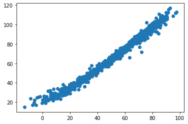

Exploring the different Linear Mixed Model regressions which use the hime.LinearRegression class as the BaseEstimator¶
[1]:
import os
import numpy as np
import pandas as pd
import seaborn as sns
import matplotlib.pyplot as plt
from sklearn.datasets import make_regression
from sklearn.metrics import r2_score
import session_info
[2]:
import statsmodels.api as sm
# import statsmodels.formula.api as smf
[3]:
current_wd = os.getcwd()
os.chdir(current_wd.split("/notebook")[0])
from hime.linear_model import LinearRegression, LassoRegression, RidgeRegression
from hime.multi_level_model import LinearMixedRegression
os.chdir(current_wd)
[4]:
session_info.show(write_req_file=False)
[4]:
Click to view session information
----- hime 0.0.1 matplotlib 3.3.4 numpy 1.19.2 pandas 1.2.3 seaborn 0.11.1 session_info 1.0.0 sklearn 0.24.1 statsmodels 0.12.2 -----
Click to view modules imported as dependencies
PIL 8.1.2 appnope 0.1.2 backcall 0.2.0 casadi 3.5.5 cffi 1.14.5 colorama 0.3.9 cycler 0.10.0 cython_runtime NA dateutil 2.8.1 decorator 4.4.2 ipykernel 5.3.4 ipython_genutils 0.2.0 ipywidgets 7.6.3 jedi 0.17.2 joblib 0.17.0 kiwisolver 1.3.1 mpl_toolkits NA parso 0.7.0 patsy 0.5.1 pexpect 4.8.0 pickleshare 0.7.5 pkg_resources NA prompt_toolkit 3.0.8 psutil 5.8.0 ptyprocess 0.7.0 pyexpat NA pygments 2.8.1 pyparsing 2.4.7 pytz 2021.1 repoze NA scipy 1.5.3 simplejson 3.17.5 six 1.15.0 storemagic NA swig_runtime_data4 NA tornado 6.1 traitlets 5.0.5 wcwidth 0.2.5 zc NA zmq 20.0.0
----- IPython 7.21.0 jupyter_client 6.1.7 jupyter_core 4.7.1 jupyterlab 2.2.6 notebook 6.2.0 ----- Python 3.9.2 (default, Mar 3 2021, 11:58:52) [Clang 10.0.0 ] macOS-10.16-x86_64-i386-64bit ----- Session information updated at 2021-10-21 15:03
Make X and y data¶
[5]:
data = sm.datasets.get_rdataset('dietox', 'geepack').data
[6]:
data.head()
[6]:
| Pig | Evit | Cu | Litter | Start | Weight | Feed | Time | |
|---|---|---|---|---|---|---|---|---|
| 0 | 4601 | Evit000 | Cu000 | 1 | 26.5 | 26.50000 | NaN | 1 |
| 1 | 4601 | Evit000 | Cu000 | 1 | 26.5 | 27.59999 | 5.200005 | 2 |
| 2 | 4601 | Evit000 | Cu000 | 1 | 26.5 | 36.50000 | 17.600000 | 3 |
| 3 | 4601 | Evit000 | Cu000 | 1 | 26.5 | 40.29999 | 28.500000 | 4 |
| 4 | 4601 | Evit000 | Cu000 | 1 | 26.5 | 49.09998 | 45.200001 | 5 |
[7]:
df_train = data.sample(frac=0.8, random_state=69420)
df_test = data.drop(df_train.index)
[8]:
df_train.shape, df_test.shape
[8]:
((689, 8), (172, 8))
Fit the romeo LinearMixedRegression¶
[9]:
mixed_dict = {"target": "Weight",
"fixed_effect": "Time",
"grouping_var": "Pig",
"random_slope": "Time"}
[10]:
def unpack_X(df, fixed_effect, grouping_var, random_slope, target):
X=df[fixed_effect]
u=df[grouping_var].unique()
random_slope_array=df[random_slope]
y=df[target]
return X, y, u, random_slope
[11]:
# unpack_X(df_train, **mixed_dict)
[12]:
reg = LinearMixedRegression(fit_intercept=True,
normalize=True).fit(X=data[[mixed_dict["fixed_effect"], mixed_dict["grouping_var"]]],
y=data[mixed_dict["target"]],
verbose=False,
kwargs=mixed_dict)
[13]:
reg.u
[13]:
array([4601, 4602, 4603, 4605, 4641, 4643, 4645, 4756, 4757, 4759, 4760,
4813, 4814, 4815, 4817, 4854, 4856, 4857, 4858, 5389, 5392, 5497,
5500, 5501, 5502, 5524, 5527, 5528, 5578, 5581, 5582, 5850, 5851,
5852, 5862, 5865, 5866, 6055, 6056, 6057, 6058, 6207, 6208, 6211,
6284, 6287, 6288, 6430, 6432, 6433, 6909, 6910, 6912, 8049, 8050,
8051, 8053, 8139, 8141, 8142, 8144, 8191, 8192, 8193, 8195, 8269,
8270, 8271, 8273, 8437, 8439, 8442])
[14]:
reg.intercept_
[14]:
15.508589708831488
[15]:
reg.summary_
[15]:
| coef | |
|---|---|
| intercept | 15.508590 |
| Time | 6.942398 |
| 4601 | -1.025854 |
| 4602 | 3.374142 |
| 4603 | 4.290797 |
| ... | ... |
| 8271 | 0.524146 |
| 8273 | 5.332475 |
| 8437 | 0.774148 |
| 8439 | 1.574140 |
| 8442 | 1.115806 |
74 rows × 1 columns
[16]:
# reg.fit_evaluation_.round(3)
[17]:
intercept = reg.intercept_
coefs = reg.coef_
Plot the target vs the fitted values¶
[18]:
reg.fitted_values
[18]:
0 5.916544
1 12.858942
2 19.801340
3 26.743738
4 33.686136
...
856 56.654990
857 63.597388
858 70.539786
859 77.482184
860 84.424582
Length: 861, dtype: float64
[19]:
_ = plt.scatter(reg.fitted_values, data[mixed_dict["target"]])

With the fitted model attempt to predict the test data¶
[25]:
data[[mixed_dict["fixed_effect"], mixed_dict["grouping_var"]]]
data[mixed_dict["target"]]
[25]:
| Pig | Evit | Cu | Litter | Start | Weight | Feed | Time | |
|---|---|---|---|---|---|---|---|---|
| 25 | 4603 | Evit200 | Cu175 | 1 | 27.59999 | 30.59999 | 6.700005 | 2 |
| 29 | 4603 | Evit200 | Cu175 | 1 | 27.59999 | 61.50000 | 64.600002 | 6 |
| 35 | 4603 | Evit200 | Cu175 | 1 | 27.59999 | 105.39996 | 166.000000 | 12 |
| 36 | 4605 | Evit100 | Cu035 | 1 | 31.50000 | 31.50000 | NaN | 1 |
| 39 | 4605 | Evit100 | Cu035 | 1 | 31.50000 | 47.69998 | 33.100002 | 4 |
| ... | ... | ... | ... | ... | ... | ... | ... | ... |
| 817 | 8273 | Evit000 | Cu035 | 22 | 25.00000 | 53.59998 | 48.500000 | 5 |
| 840 | 8439 | Evit200 | Cu175 | 24 | 27.29999 | 43.89999 | 33.200001 | 4 |
| 847 | 8439 | Evit200 | Cu175 | 24 | 27.29999 | 95.00000 | 149.000000 | 11 |
| 848 | 8439 | Evit200 | Cu175 | 24 | 27.29999 | 100.50000 | 158.600006 | 12 |
| 850 | 8442 | Evit000 | Cu175 | 24 | 25.70000 | 28.70000 | 6.600000 | 2 |
172 rows × 8 columns
[27]:
df_test[[mixed_dict["fixed_effect"], mixed_dict["grouping_var"]]]
[27]:
| Time | Pig | |
|---|---|---|
| 25 | 2 | 4603 |
| 29 | 6 | 4603 |
| 35 | 12 | 4603 |
| 36 | 1 | 4605 |
| 39 | 4 | 4605 |
| ... | ... | ... |
| 817 | 5 | 8273 |
| 840 | 4 | 8439 |
| 847 | 11 | 8439 |
| 848 | 12 | 8439 |
| 850 | 2 | 8442 |
172 rows × 2 columns
[29]:
y_pred = reg.predict(X=df_test[[mixed_dict["fixed_effect"], mixed_dict["grouping_var"]]])
y_pred#.head(2)
[21]:
y_test = df_test[["target"]]
y_test.head(2)
---------------------------------------------------------------------------
KeyError Traceback (most recent call last)
<ipython-input-21-f30c53abf417> in <module>
----> 1 y_test = df_test[["target"]]
2 y_test.head(2)
/opt/miniconda3/envs/general/lib/python3.9/site-packages/pandas/core/frame.py in __getitem__(self, key)
3028 if is_iterator(key):
3029 key = list(key)
-> 3030 indexer = self.loc._get_listlike_indexer(key, axis=1, raise_missing=True)[1]
3031
3032 # take() does not accept boolean indexers
/opt/miniconda3/envs/general/lib/python3.9/site-packages/pandas/core/indexing.py in _get_listlike_indexer(self, key, axis, raise_missing)
1264 keyarr, indexer, new_indexer = ax._reindex_non_unique(keyarr)
1265
-> 1266 self._validate_read_indexer(keyarr, indexer, axis, raise_missing=raise_missing)
1267 return keyarr, indexer
1268
/opt/miniconda3/envs/general/lib/python3.9/site-packages/pandas/core/indexing.py in _validate_read_indexer(self, key, indexer, axis, raise_missing)
1306 if missing == len(indexer):
1307 axis_name = self.obj._get_axis_name(axis)
-> 1308 raise KeyError(f"None of [{key}] are in the [{axis_name}]")
1309
1310 ax = self.obj._get_axis(axis)
KeyError: "None of [Index(['target'], dtype='object')] are in the [columns]"
Calculate the r2 between the predicted vs the real scores¶
[22]:
r_sq = r2_score(y_test["target"],
y_pred)
r_sq
---------------------------------------------------------------------------
NameError Traceback (most recent call last)
<ipython-input-22-31a3dd205263> in <module>
----> 1 r_sq = r2_score(y_test["target"],
2 y_pred)
3 r_sq
NameError: name 'y_test' is not defined
Plot the predicted vs the real values¶
[23]:
_ = plt.figure(figsize=(12, 7))
_ = plt.plot(y_test["target"],
y_pred,
'o',
# label='original data'
)
_ = plt.annotate(text = f"R-squared = {round(r_sq, 3)}",
xy=(100, -140),)
---------------------------------------------------------------------------
NameError Traceback (most recent call last)
<ipython-input-23-422ec22d8156> in <module>
1 _ = plt.figure(figsize=(12, 7))
----> 2 _ = plt.plot(y_test["target"],
3 y_pred,
4 'o',
5 # label='original data'
NameError: name 'y_test' is not defined
<Figure size 864x504 with 0 Axes>
[ ]: